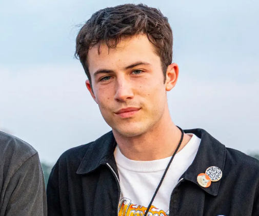

History of the BandAs teenagers in 2011, Braeden Lemasters (guitar/vocals), Cole Preston (guitar/drums), and Dylan Minnette (guitar/vocals) formed the band at a music studio called Join the Band in Van Nuys with Zack Mendenhall (bass). They were students enrolled in the GigMasterz program at Keyboard Galleria Music Center in Southern California. They changed their name to Feaver and played the 2011 Warped Tour. They also used the name The Narwhals before settling on Wallows in 2017, now without Mendenhall. In April 2017, the band released their first single under the Wallows moniker, "Pleaser". The song would eventually reach number two on the Spotify Global Viral 50 chart and number one on the KROQ Locals Only playlist. In May 2017, Wallows released a second single, "Sun Tan", and began playing live shows in the Los Angeles area, selling out The Roxy and the Troubadour. Their third single, "Uncomfortable", was released in September 2017. In November 2017, their song "Pulling Leaves off Trees" premiered on Zane Lowe's Beats 1 radio show. That month, the band also announced their first headlining North American tour that would run from January to March 2018. The tour started in San Francisco on January 24. In February 2018, the band announced that they had signed to Atlantic Records and were planning to release their major label debut EP, Spring, in April 2018. They also released a new single, "Pictures of Girls", their first on Atlantic. The song was chosen as a "Critical Cut" by SiriusXM Alt Nation. Wallows ended their North American tour at South by Southwest in March 2018. Later in the month, they released a second track from Spring titled "These Days". The EP was released on April 6, 2018, by Atlantic Records and was produced by John Congleton. Wallows embarked on another leg of their Nothing Happens Tour in February 2020, for 15 additional stops. The band partnered with local non-profit charities in each of the cities in this leg of the tour such as Project Lazarus and the LGBT Center of Raleigh. Before each show, the band posted a list of donatable items for their attendees to bring (with the incentive of donating being a free Wallows pin) on their social media accounts, and were able to garner a plethora of items to donate after each show. In an interview with 97X, a Tampa radio station, Minnette remarked that the nonprofit organization they partnered with in Fort Lauderdale, Florida, Handy Inc., shared that Wallows fans had brought an equivalent of five months' worth of supplies to the band's show. The song would eventually reach number two on the Spotify Global Viral 50 chart and number one on the KROQ Locals Only playlist. In May 2017, Wallows released a second single, "Sun Tan", and began playing live shows in the Los Angeles area, selling out The Roxy and the Troubadour. Their third single, "Uncomfortable", was released in September 2017. On March 20, 2020, Wallows released a new single "OK" alongside a music video. On September 9, 2020, Wallows released another single "Nobody Gets Me (Like You)" alongside the announcement for their second major EP, Remote that was released on October 23, 2020. On February 15, 2021, Wallows announced a deluxe version of Remote alongside the release of a new single "Quarterback". The deluxe edition was released on February 19, 2021, with two new tracks, the previously released single, "OK", and a remixed version of "OK" that features Remi Wolf and Solomonophonic. On September 30, 2021, Wallows released the single "I Don't Want to Talk". This song is the lead single off of their sophomore album, Tell Me That It's Over, released on March 25, 2022. Wallows embarked on their Tell Me That It's Over Tour in April 2022 and will be touring throughout 2022 and into 2023. Wallows performed at Coachella 2022 which was headlined by Harry Styles, Billie Eilish and The Weeknd x Swedish House Mafia. |
Meet the MembersDylan Minnette(vocals, keyboards, drums)

Dylan Christopher Minnette (born December 29, 1996) is an American actor and musician. He is known for his role as Clay Jensen in the Netflix drama series 13 Reasons Why. He has made guest appearances in several television series, such as Lost, Awake, Scandal, Grey's Anatomy, Supernatural, Prison Break, and Agents of S.H.I.E.L.D.. He is also the lead vocalist and rhythm guitarist for the American alternative rock band Wallows. Minnette was born in Evansville, Indiana, the only child of Robyn and Craig Minnette. The family moved to Champaign, Illinois, where they lived for five years, and later moved to Los Angeles, California, so that he could pursue a career in acting. Cole Preston(piano, drums backing vocals)
Cole Preston is known as the drummer for the Wallows, an American alternative rock band. Alongside Braeden Lemasters (guitar/vocals) and Dylan Minnette (guitar/vocals).Cole Preston and his fellow band members created the alternative rock group in 2011. The band first met in a music convention called Join the Band and have been together ever since.From 2009, Preston began starring in the TNT series Men of a Certain Age as Albert Tranelli. He earned various awards and nominations for the role, including a Peabody Award and a nomination for Young Artist Award for Best Performance in a TV Series. He was in the show for two seasons until it ended in 2011. He also had a supporting role in the 2009 remake of The Stepfather. Braeden Lemasters(vocals, lead guitar, bass guitar)
Braeden Matthew Lemasters (born January 27, 1996) is an American actor, musician, and singer. He began his career as a child actor, receiving recognition for his role as Albert Tranelli in the TNT comedy-drama series Men of a Certain Age (2009-2011). He is also the lead guitarist and singer for the American alternative rock band Wallows. Braeden Matthew Lemasters was born in Warren, Ohio, to Dave and Michelle Lemasters. He has an older brother, Austin. When he was nine his family moved to Santa Clarita, California, so that he could pursue a career in acting. He grew up listening to The Beatles and Arctic Monkeys, and learned how to play guitar.[4] During middle school, Braeden joined the band The Feaver with his friends and future Wallows members Cole Preston and Dylan Minnette. |

MEMBERS